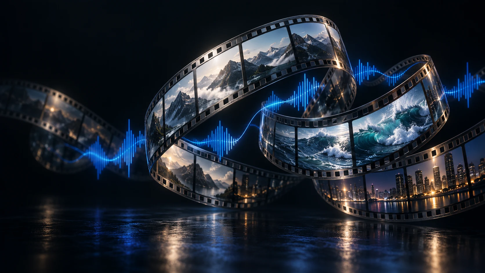

Beat-aware cuts
Analyze your track and align clip changes with the music. Fit the full song and draw more unused clips when needed.
Turn a folder of clips and a track into a finished montage. Made on your computer.

Analyze your track and align clip changes with the music. Fit the full song and draw more unused clips when needed.
Crossfades, optical flow and eased ping-pong loops. Add stills with slow zooms or take random excerpts from longer clips.
Enhance smaller footage on your own GPU. Choose 720p through 4K, landscape, portrait or square.
Create offline. Generate captions with Ollama. Optionally post or schedule to X through your signed-in browser extension.
Get the latest version for your platform and start making.
Windows 10 / 11 · x64 portable ZIP
Ubuntu 22.04+ / compatible · x64 tar.gz
Free, open source. Your media stays local. All downloads & SHA-256 checksums ↗
Extract or install the package for your system. Install FFmpeg and FFprobe, then open Montage Studio. Add your video folders and choose a music file. Build your montage; the Library shows where the MP4 is already saved.
AI upscaling needs a compatible Vulkan GPU. X publishing is optional and requires Chrome or Edge plus the included extension. macOS builds are unsigned; use the system’s Open Anyway control if prompted. Apple Silicon AI may require Rosetta.